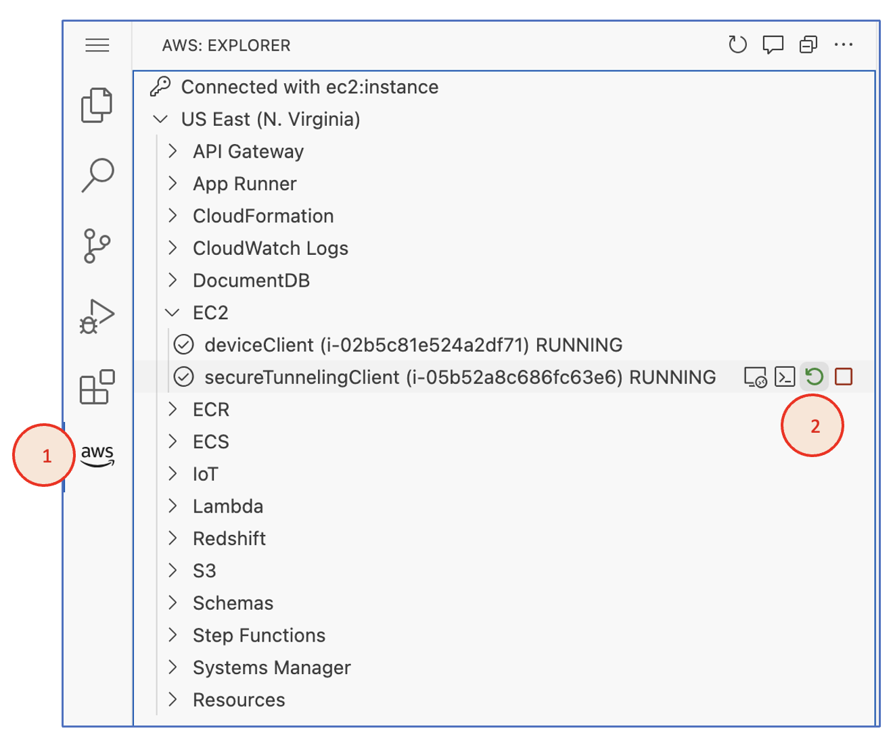

Actividad 3
ACCESO REMOTO A UN DISPOSITIVO IoT USANDO UN TÚNEL SEGURO
Objetivo
El objetivo de esta actividad es comprobar el funcionamiento de la funcionalidad de tunelamiento seguro del AWS IoT Device Management, que permite conectarse remotamente y con seguridad a los dispositivos IoT para solucionar problemas, hacer cambios en la configuración, etc., aun estando protegidos por un firewall.
Nota
Puedes ver aquí la documentación de la funcionalidad Tunelamiento seguro.
Introducción
Antes de hacer la parte práctica de esta actividad, lee el contenido introductorio del tutorial:
- 7. Acceso sincronizado a su dispositivo IoT con AWS IoT Device Management – Túnel seguro
- 7.1 Lectura previa: Conceptos de tunelización segura en AWS IoT.
¿Qué se va a configurar en esta actividad?
Una vez que se crea un túnel seguro en AWS IoT, hay dos maneras de probar la conexión con el túnel:
- Usando la conexión SSH disponible en la consola de AWS IoT.
- Configurando en una segunda instancia el proxy local para acceder al túnel seguro.
El siguiente diagrama muestra cómo sería la configuración del túnel seguro en la segunda opción, que es la que se va a probar en esta actividad.
Configuración del túnel seguro entre dos instancias.

Este escenario muestra los siguientes elementos:
- La instancia 1, que es la que hace las veces de dispositivo IoT al que queremos conectarnos (es decir, el dispositivo destino). Esta es la instancia VSCode en la que ya instalamos y configuramos el Device Client. Como el Device Client ya incluye un proxy local, no necesitaremos hacer ninguna configuración adicional en esta instancia.
- El túnel seguro con el dispositivo IoT destino (instancia 1) gestionado por AWS IoT. Cuando se crea el túnel, el Device Client instalado en el dispositivo se suscribe automáticamente a un tópico MQTT en el que recibe una notificación con el token de acceso del cliente (CAT) al túnel seguro. Este token es utilizado por el Device Client para establecer la conexión con el túnel sin que sea necesario usar un proxy local independiente.
- La instancia 2, que es la que hace las veces de dispositivo origen desde el que un operador se conectaría al dispositivo IoT a través del túnel seguro. En esta instancia sí que tendremos que configurar el proxy local que nos permita conectarnos al túnel e iniciar una sesión SSH remota en el dispositivo IoT.
Los pasos que vamos a seguir para configurar este escenario son:
- Configurar un túnel seguro en AWS IoT.
- Configurar un proxy local en el dispositivo origen (instancia 2).
- Abrir una sesión SSH en el dispositivo IoT destino (instancia 1) desde el dispositivo origen (instancia 2).
Configuración del túnel seguro en AWS IoT Core
Para configurar el túnel seguro en AWS IoT Core haz lo siguiente:
-
En la consola de AWS IoT elige la opción Túneles seguros dentro del menú Acciones Remotas en el panel de la izquierda.
-
Crea un nuevo túnel seguro pulsando en Crear túnel e indicando las opciones siguientes:
- Método de configuración: elige Configuración manual.
- Información básica: introduce una descripción para el túnel.
- Configuración de destino
- Añade el servicio SSH.
- En Nombre de la cosa selecciona deviceClientThing. Recuerda usar tu prefijo delante.
- Duración del túnel: deja el valor predeterminado (12:00). Ten en cuenta que cada vez que este tiempo expire habrá que generar nuevos tokens de acceso para el túnel.
Propiedades del túnel.
-
Descarga el token de acceso del cliente (CAT) del dispositivo origen. El token del dispositivo IoT destino no es necesario descargarlo ya que el Device Client del dispositivo ya lo obtiene de AWS IoT usando una suscripción automática a un tópico MQTT, como se explicó anteriormente.
Descarga del token de acceso al túnel.
-
Comprueba que una vez que se crea el túnel, el dispositivo IoT destino ya aparece conectado.
Estado del túnel una vez creado.


Importante
Antes de continuar toma la captura 1 que se pide para justificar la actividad.
Configuración del dispositivo de origen
En este apartado vamos a crear y configurar la instancia 2, una instancia VSCode que haga las veces de dispositivo de origen, es decir, el dispositivo desde el que un operador se conectaría remotamente al dispositivo IoT destino usando el túnel seguro.
Creación de una instancia VSCode
Para crear la instancia haz lo siguiente:
- Desde la consola de CloudFormation en el AWS Academy Learner Lab, lanza una instancia VSCode siguiendo las instrucciones del documento que se te proporcionó. Usa el nombre secureTunnelingClient con tu prefijo delante para la pila de CloudFormation.
Importante
Antes de continuar toma la captura 2 que se pide para justificar la actividad.
Instalación del token de acceso en la instancia
Para instalar el token de acceso en la instancia creada en el apartado anterior haz lo siguiente:
-
Accede a la consola de la instancia y crea un directorio secure_tunnel en
/home/ubuntu. -
Sube el token que descargaste cuando creaste el túnel seguro al directorio secure_tunnel creado en el paso anterior.
Nota
Para subir el fichero del token elige en el Explorador de Ficheros la opción Upload en el menú de contexto de la carpeta secure_tunnel.
Conexión al túnel seguro
Para conectarnos al túnel seguro desde el dispositivo origen tenemos que instalar, configurar y ejecutar el proxy local. Hay diferentes maneras de hacerlo. En esta actividad vamos a usar una imagen Docker predefinida que ya tiene el proxy local instalado.
Haz lo siguiente:
-
Abre un terminal e instala Docker en la instancia y añade tu usuario al grupo docker.
$ sudo apt install docker.io $ sudo usermod -aG docker $USERNota
Si te aparece un diálogo preguntando “Which services should be restarted?”, usa la tecla del tabulador para elegir OK y acepta. Se reiniciará la sesión en el navegador
-
Reinicia la instancia.
Nota
Puedes hacerlo desde la consola de EC2 o desde el menú de EC2 en el AWS Toolkit de la propia instancia.

-
Una vez que se reinicie la instancia, en un terminal comprueba que docker aparezca en el listado de grupos.
$ groups ubuntu adm ... lxd docker -
Exporta el token que subiste en el apartado anterior a una variable de entorno.
Nota
Usa el nombre del fichero de tu token en el comando.
$ export AWSIOT_TUNNEL_ACCESS_TOKEN=$(cat ~/secure_tunnel/<ID_DE_TU_TOKEN>-sourceAccessToken.txt) -
Comprueba en el mismo terminal que la variable está correctamente configurada.
$ echo $AWSIOT_TUNNEL_ACCESS_TOKENToken exportado en una variable de entorno.
Importante
La variable de entorno no es permanente. Si cierras el terminal tendrás que volver a exportarla.
-
En el mismo terminal en el que exportaste el token crea la conexión al túnel seguro ejecutando la imagen Docker del proxy local.
Nota
La explicación de los parámetros que se le pasan al localproxy puedes verla aquí.
$ docker run --rm -it --network=host \ -e AWSIOT_TUNNEL_ACCESS_TOKEN=$AWSIOT_TUNNEL_ACCESS_TOKEN \ public.ecr.aws/aws-iot-securetunneling-localproxy/ubuntu-bin:amd64-latest \ --region us-east-1 -s 5555 -c /etc/ssl/certs --destination-client-type V1Ejecución del proxy local en un contenedor Docker.
-
Verifica en la consola de AWS IoT que en las propiedades del túnel ahora aparecen ambas conexiones (origen y destino) en verde.
Propiedades del túnel seguro en la consola de AWS IoT.


Importante
Antes de continuar toma las capturas 3 y 4 que se piden para justificar la actividad.
Conexión al dispositivo IoT
Una vez que tenemos el proxy local en el dispositivo origen conectado al túnel seguro, vamos a usar esa conexión para abrir una sesión SSH con el dispositivo IoT destino. Haz lo siguiente:
-
Abre otro terminal en la instancia origen y configura un par de claves SSH usando EC2.
Nota
Usa tu prefijo en el nombre del fichero que almacena las claves.
$ cd ~/secure_tunnel $ aws ec2 create-key-pair --key-name secure-tunnel > <TU_PREFIJO>-key-pair.json $ EC2_KEY_MATERIAL=$(jq -r ".KeyMaterial" <TU_PREFIJO>-key-pair.json) $ echo "$EC2_KEY_MATERIAL" > secure-tunnel.pem $ chmod 400 secure-tunnel.pemConfiguración de las claves SSH en el origen.

-
En la instancia del dispositivo IoT destino (donde está instalado el Device Client), añade la clave creada en el punto anterior al fichero de claves SSH autorizadas.
$ aws ec2 describe-key-pairs --key-names secure-tunnel --include-public-key \ --output text --query "KeyPairs[0].PublicKey" >> ~/.ssh/authorized_keysConfiguración de las claves SSH permitidas en el dispositivo IoT.

Nota
En un escenario real el dispositivo IoT ya tendría que tener previamente configuradas las claves SSH autorizadas, ya que no podríamos acceder a él al no tener aún iniciada la conexión SSH a través del túnel seguro.
-
Desde el terminal del paso 1 en la instancia origen, conéctate al proxy local para iniciar la sesión SSH con el dispositivo IoT destino a través del túnel seguro.
$ ssh -i secure-tunnel.pem ubuntu@localhost -p 5555Sesión SSH remota al dispositivo IoT a través del túnel seguro.

Nota
Fíjate en que al establecer la conexión, la IP privada del prompt pasa a ser la de la instancia 1 (el dispositivo IoT).
Comprobación de la conexión
Si la conexión se realizó sin errores, ahora estaremos conectados al dispositivo IoT destino a través del túnel seguro. En el terminal en el que tienes abierta la conexión SSH haz lo siguiente:
- Comprueba el contenido del fichero de configuración del Device Client.
$ sudo head -7 /etc/.aws-iot-device-client/aws-iot-device-client.conf - Comprueba el estado del servicio Device Client.
$ sudo systemctl status aws-iot-device-client
Importante
Antes de continuar toma las capturas 5 y 6 que se piden para justificar la actividad.
Desconexión del dispositivo origen
- En el terminal de la instancia origen en el que tienes abierta la conexión SSH con el dispositivo IoT destino, cierra la conexión con el comando:
exit. -
En el mismo terminal, detén la ejecución del contenedor Docker del proxy local.
$ docker stop $(docker ps -q)Nota
Si el contenedor Docker del proxy local se detuvo correctamente, en el terminal donde estaba ejecutándose ahora tendrás un prompt del shell esperando por un comando. Si ejecutas
docker ps -qno debería devolver nada en la salida.
Justificación de la actividad
Toma las siguientes capturas para la memoria de justificación de la práctica:
Configuración del túnel seguro en AWS IoT Core
-
Propiedades del túnel seguro en la consola de AWS IoT.
Tiene que mostrar que el destino ya está conectado al túnel, pero que el origen aún no.
Configuración del dispositivo de origen
-
Recursos de la pila secureTunnelingClient en la consola de CloudFormation.
Ejemplo
-
Salida del terminal de la instancia origen en el que se está ejecutando el contenedor Docker del proxy local.
Tiene que mostrar el comando
docker runy su salida con los mensajes que informan de que se conectó correctamente al túnel seguro y que está escuchando por una conexión en la puerta 5555. -
Propiedades del túnel seguro en la consola de AWS IoT.
Tiene que mostrar que ambos extremos del túnel -origen y destino- están conectados.

Conexión al dispositivo IoT
-
Instancia origen desde la que se inició la conexión SSH.
Tiene que mostrar el terminal en el que se ejecutaron los comandos:
$ ssh -i secure-tunnel.pem ubuntu@localhost -p 5555 $ sudo head -7 /etc/.aws-iot-device-client/aws-iot-device-client.conf $ sudo systemctl status aws-iot-device-clientEjemplo

-
Instancia del dispositivo IoT destino.
Tiene que mostrar en un terminal la salida del comando:
$ sudo tail -F /var/log/aws-iot-device-client/aws-iot-device-client.logEjemplo

Importante
Las capturas tienen que asemejarse a las que se tomaron en el curso y en las prácticas anteriores. Las capturas tomadas en la consola AWS tienen que incluir el menú superior en el que pueda verse el nombre de usuario de la cuenta.